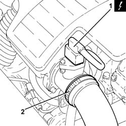
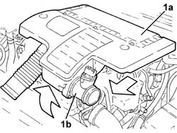
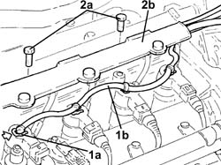
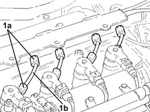
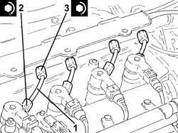

1060F36 lines to injectors - r r
- Path
- Procedures > 10 ENGINE UNIT > 1060 DIESEL FUEL INJECTION > 1060F injectors and lines > 1060F36 lines to injectors - r r
- Kind
- repair procedure (removal / refitting; the operation number is the code)
- Applies to
- engines: 1.3 JTD 16v; all production periods
- Interactive page
- https://sloeber94.github.io/elrnDB-fPnd/en/#/2752602
Applies to: engines: 1.3 JTD 16v; all production periods
 Removing
Removing
 Refitting
RefittingDisconnect the battery negative terminal.
1. Disconnect the electrical connection from the air flow meter.
 | Name | Connector |
|---|---|---|
1 | Air flow meter | K41 |
2. Loosen the band and disconnect the air inlet hose to the turbocharger.

Applies to: engines: 1.3 JTD 16v; all production periods
1. Remove the air filter (1a) complete with air flow meter (1b) by releasing from the underlying pins and then from the rear fastenings.

Applies to: engines: 1.3 JTD 16v; all production periods
1. Push clips (1a) by hand and disconnect the pipe from the injectors to the fuel manifold (1b), injectors side.
2. Undo the bolts (2a) and move aside the pipe carrier channel (2b) as far as necessary.

Applies to: engines: 1.3 JTD 16v; all production periods
1. Undo the connections (1a) and remove the pipes from the fuel manifold to the fuel injectors (1b).

Applies to: engines: 1.3 JTD 16v; all production periods
Refitting
Removing1. Fit the new pipes from the fuel manifold to the injectors in place and secure them using the connectors without tightening them.
2. Tighten the connectors for the pipes from the fuel manifold to the injectors to the recommended torque using a suitable spanner.
 | Fastening | Component | Ø | Value (daNm) |
|---|---|---|---|---|
2 | Connector | FUEL MANIFOLD LINE TO INJECTORS | M12 | (Injector side) 2.3 ÷ 2.5 |
3. Tighten the connectors for the pipes from the fuel manifold to the injectors to the recommended torque using a suitable spanner.
| Fastening | Component | Ø | Value (daNm) |
|---|---|---|---|---|
3 | Connector | FUEL MANIFOLD LINE TO INJECTORS | M14 | (Fuel manifold side) 2.7 ÷ 2.9 |

Applies to: engines: 1.3 JTD 16v; all production periods
Fit the pipe hlder duct in its housing and secure it using the bolts.
Connect the pipe from the fuel injectors to the fuel manifold pushing it until the clips can be heard clicking into place.
Fit the air filter complete with air flow meter in place.
Connect the air inlet hose to the turbocharger and tighten the band.
Connect the electrical connection to the air flow meter.
| Name | Connector |
|---|---|---|
- | Air flow meter | K41 |
Connect the battery negative terminal.